Power series and Taylor series
Power series and convergence intervals
A power series is best thought of as a function. It turns each value of a variable x into the sum of a series. The variable always appears as 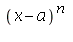within the series. In this example, the center point a=0.
| > |
c:= n->(-3)^n/sqrt(n+1); |
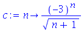
| > |
s:= x-> sum(c(n)*x^n,n=0..infinity); |

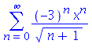
Maple can give a little insight about a power series through a graph.
| > |
plot(s(x),x=-0.5..0.5); |
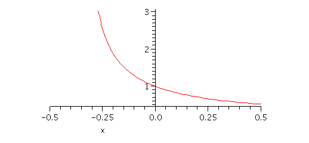
From the graph, it appears unlikely that the series is convergent all the way down to x=-0.5. Maple can help you identify what the radius of convergence is. Often the Ratio Test is useful in this respect.
| > |
abs( (c(n+1)*x^(n+1)) / (c(n)*x^n) ); |
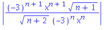
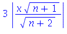
| > |
L:= limit( %, n=infinity ); |
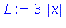
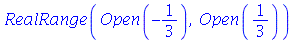
Notice how solve can solve inequalities. The radius of convergence is 1/3. Observe that in the graph above, Maple computed "values" of the power series outside its interval of convergence. These values have to be regarded as suspect at best.
The endpoints of the interval of convergence always must be checked independently. At the right end,
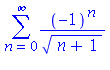
This is a convergent alternating series. At the left end,
It is now clear that the interval of convergence is the half-open interval (-1/3,1/3].
Taylor series and Taylor polynomials
The most important type of power series is a Taylor series. It is a different way to express a function f(x).
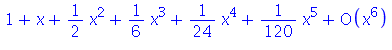
The term 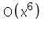in the above is Maple's way of showing the power of the first nonzero term it left out. You can ask for more or fewer terms.
| > |
taylor( exp(x), x=0, 10 ); |
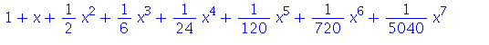
While Maple can compute as many terms as you like, it's not so simple to get it to say what we write: 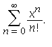It's basically up to you to find the pattern to express things this way when possible.
The expansion point of the series has an important effect.
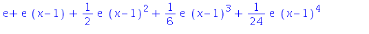
| > |
taylor( exp(x), x=-2 ); |
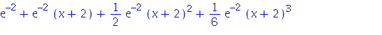
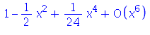
| > |
taylor( cos(x), x=Pi/2 ); |
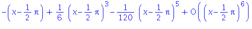
If we keep just the first n+1 terms of a Taylor series and drop the rest, we get the nth degree polynomial known as a Taylor polynomial, 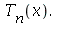This is the only polynomial of degree n or less that matches the value of f and its first n derivatives at the expansion point x=a. We can ask Maple to convert a Taylor series it found into a Taylor polynomial.
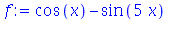
| > |
taylor( f, x=Pi/2, 4 ); |
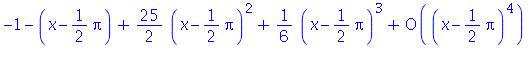
| > |
T3:= convert( %, polynom ); |
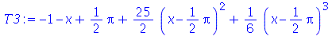
| > |
eval( [f, T3], x=Pi/2 ); |
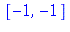
| > |
eval( [diff(f,x), diff(T3,x)], x=Pi/2 ); |
| > |
eval( [diff(f,x,x), diff(T3,x,x)], x=Pi/2 ); |
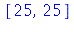
| > |
eval( [diff(f,x,x,x), diff(T3,x,x,x)], x=Pi/2 ); |
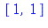
Close to the value x=a, 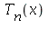 can be a very good approximation to the original f. In fact it is a generalization of the familiar tangent line approximation.
| > |
T1:= convert( taylor(f,x=Pi/2,2), polynom ); |
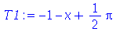
| > |
plot( [f,T1,T3], x=Pi/2-1/2..Pi/2+1/2, color=[black,blue,red] ); |
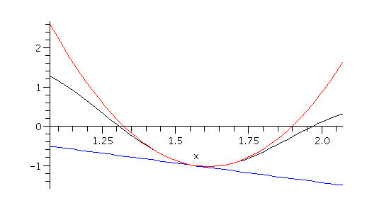